GaussView 6：绘图与光谱（Plots & Spectra）（p.88–135）¶
3D Scan 图、Plot 各面板、自定义、右键菜单、参考数据、位移模式、同位素、线型、Spectra 菜单与数据保存
原文件：
../gview6官方说明书.md（全量单文件存档）｜图片目录：../imgs/
Scan Results¶
The Results=>Scan menu path allows you to view plots of energy and other results from calculations that produce multiple structures among their results.
Example Scan Results Clicking on a point in the graph causes the corresponding structure to appear in the View window.
There is more information about Working with Plots here.
3D Scan Plots¶
Gaussian Scan calculations over two variables are plotted by GaussView as three-dimensional surfaces. You can click on the various points in this plot as for 2D plots.
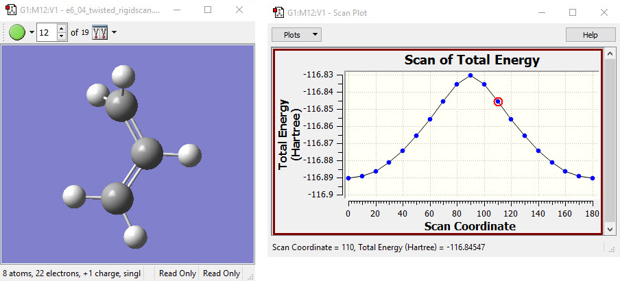
Results Plot for a PES Scan over 2 Variables Only scan calculations over exactly two variables will produce plots like this one. This plot can be rotated and zoomed using the standard mouse actions, and a node can be selected by clicking on it.
The context menu is different for 3D scans than for other plots (as illustrated above). It has the following items:
-
Save Image File: Save image to a graphics file.
-
Save Data: Save graph data to a text file.
-
Show Surface: Choose surface display type. The default is filled mesh.
-
Show Bars: Plot values as lines (bars) in the z-direction in several styles. Bars are most often combined with Wireframe or None surface diplays.
-
Show Nodes:Display the locations of all structures as white dots (All, which is the default), only the Active node (as a green dot) or without special marking at the intersection (None).
-
The five remaining show items include or hide the corresponding items. These selections toggle.
-
The 4 Edit items allow you to modify various label text.
-
Invert Axis: Reverse the direction of the selected axis.
-
Axis Scale: Scale the values on the selected axis and adjust labels accordingly. The default is 1.0.
-
Axis Origin: Change the origin for the selected axis and change labels to be relative to this new value. The default is 0.
-
Background Color: Set the window background color.
-
Value Color: Specify the color scheme for the plotted surface.
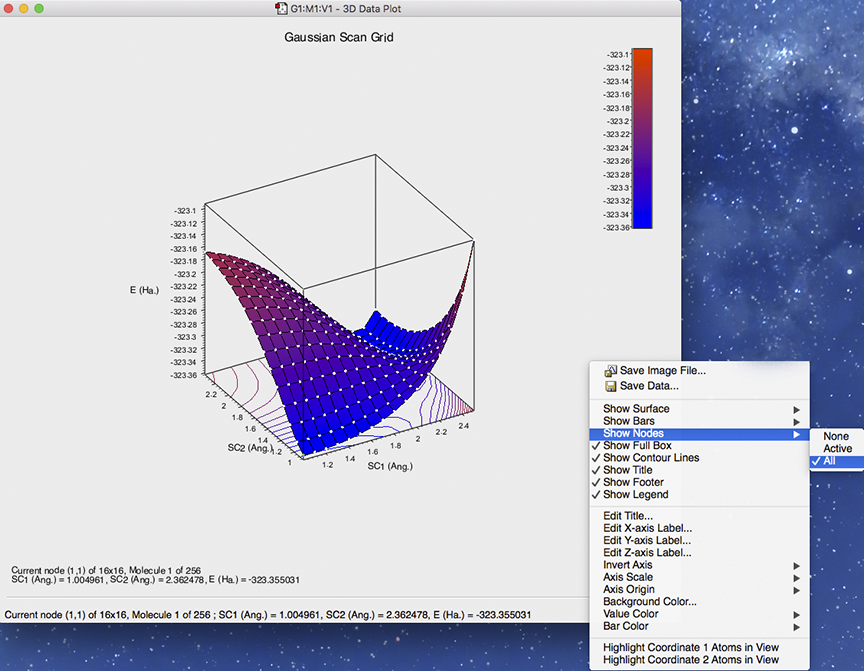
-
Bar Color: Specify what the plotted bars (if visible) are colored according to the value color (as specified in value color) or all plotted in asingle common color. Use the choose common menu item to set the desired color in the second case.
-
Highlight Coordinate n Atoms i View: Highlight and label atoms which are used to define coordinate n (1 or 2) in the view window. These items toggle.
Trajectory Plot¶
This feature allows you to view plots of energy and other results from Gausian trajectory calculations (ADMP or BOMD).
Nuclear Kinetic Energy Plot from an ADMP Trajectory Calculation
The following items are plotted:
-
Nuclear Kinetic Energy
-
Electronic Kinetic Energy
-
Potential Energy
-
Total Energy
-
Total Angular
-
Momentum
-
Conservation of Alpha Electrons
-
Average Alpha Idempotency
-
RMS Alpha Idempotency
-
Conservation of Beta Electrons
-
Average Beta Idempotency
-
RMS Beta Idempotency
The latter three apply only to open shell calculations.
More information about this functionality is in Working with Plots.
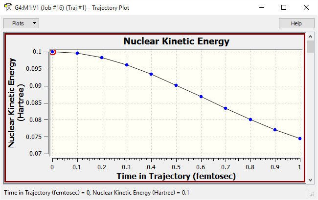
Displaying Energy Plots¶
Related Information:
- Customizing Plots and Spectra
The Results=>Energy Plot menu item displays the energy as found by the GMMX Conformer Calculation in GaussView.
Example Energy Plot of Desflurane
The plot will display each molecule as its own plot point. Each molecule is a different conformer of the original input file. Clicking on any point in the plot will display the corresponding molecule in the molecule group.
In the example above, the red circle on molecule 15 indicates that this molecule is currently selected. In the lower left hand of the dialog, information about this molecule is displayed.
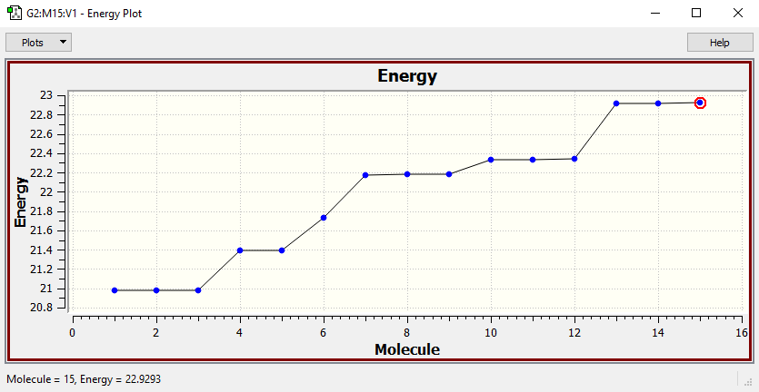
Customizing Plots and Spectra with Plot Properties¶
The Plot Properties window appears when you select the Properties item from the Plots menu or from the context menu for a plot/spectrum. This dialog may be used to customize many aspects of the plot or spectrum. It has four panels, as illustrated below:
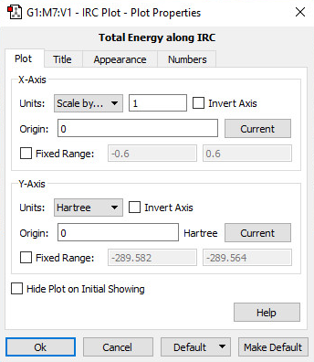
Customizing a Plot (left) or Spectrum (right)
The Plot Panel¶
The various controls in the panel have the following effects:
-
Units: Specifies the units for the corresponding axis. Coordinates can also be scaled by selecting the Scale by from the popup menu and entering value into the text box (see the Y-axis above).
-
Origin: Specifies the value for the origin for the corresponding axis.
-
Current buttons: Causes the coordinate of the currently selected point to be used as the origin for the corresponding axis.
-
Invert Axis: Invert the plot vertically (Y-axis) or horizontally (X-axis).
Additional fields may appear in the spectrum version of the window, e.g., the Scale Frequencies? and IR Peak Half-Width Height options.
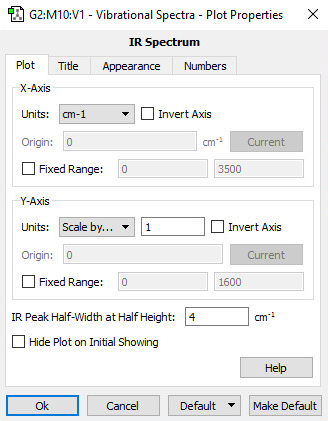
The Title Panel¶
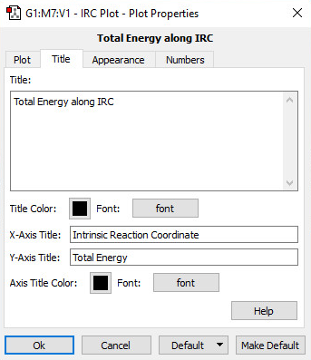
Customizing the Title
The various controls in the panel have the following effects:
-
Title: Change the title of the plot graph.
-
Title Color: Adjust the color of the title.
-
Font: Change the font of the title.
-
X-Axis Title, Y-Axis Title: Edit the title of the X-Axis or Y-axis (respectively). You can include special characters as HTML entities (e.g. the Y-axis title for the IR spectrum above) as weel as the and tags for subscripts and superscripts (respectively).
-
Axis Title Color: Adjust the color of both axis titles.
Additional fields may appear in the spectrum version of the window: e.g., the Y2-Axis Title option above.
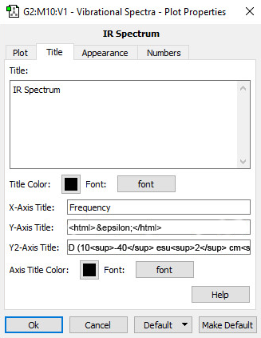
The Appearance Panel¶
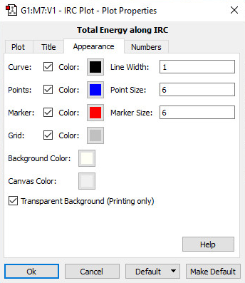
Customizing the Plot (left)/Spectrum (right) Appearance
The various controls in the panel have the following effects:
-
Curve: Allows you to adjust the color and edit the width of the curve. There is also the option of removing the curve by unckecking the box.
-
Points: Allows you to adjust the color and edit the size of the points. There is also the option of removing the points by unckecking the box.
-
Marker: This option allows you to adjust the color and edit the size of the marker. There is also the option of removing the marker by unckecking the box.
-
Grid: Adjust the color of the grid lines on the graph. There is also the option of removing the grid by unckecking the box.
-
Background Color: Change the background color of the graph.
-
Canvas Color: Adjust the canvas color of the graph.
-
Transparent Background: This option allows for a transparent or non-transparent, background, but only when printing.
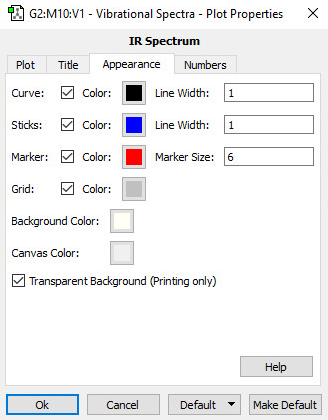
The Numbers Panel¶
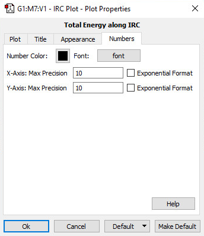
Customizing the Appearance of Numbers
The various controls in the panel have the following effects:
-
Number Color: Adjust the color of the numbers.
-
Font: Change the font of the numbers.
-
X-Axis: Max Precision: Change the X-Axis interval.
-
Y-Axis: Max Precision: Change the Y-Axis interval.
-
Exponential Format: Displays the numbers of the X and Y axes in exponential notation.
Additional fields may appear in the spectrum version of the window, e.g., the Y2-Axis: Max Precision option above.
Restoring Default Settings¶
The Default popup and Make Default buttons allow you to restore a previous set of plot/spectrum properties:
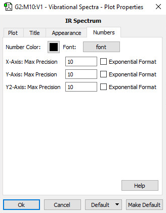
Restoring Saved or Factory Default Settings
These controls have the following effects:
-
Default: Opens a drop-down menu of the following options:
-
Saved Default: Restore the settings of the dialog to a previously saved default.
-
Factory Default: Restore the settings of the dialog to the factory default.
-
Make Default: Makes the current settings the default settings.
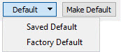
Working with Plots¶
Manipulating and Customizing Plots¶
You can click on the various points in the plot, and the corresponding structure will appear in the View window.
All plots can be manipulated for viewing in a variety of ways:
-
Scrolling and resizing: Typically, multiple plots/spectra are available in the same dialog and will not all be viewable at the same time. In that case, the dialog window can be resized to see more of them at the same time, or the user can use the scroll bar to scroll down to see the desired plot. If several plots are visible, then resizing the window expands/shrinks the X-axis while the plot height stays constant. In other words, only the height of the viewing area changes. When only one plot is visible—i.e., the dialog only contains one plot or the other plots have been hidden (see below)—then resizing the dialog expands/shrinks the plot along both axes. To focus on one or two plots, hide the other plots, using the Plots menu.
-
Zooming and unzooming: All of the plots support zooming. This feature is very handy for resolving fine details. To zoom in, click and hold the left mouse button to select one corner of the zoom field. While holding the mouse button down, move the mouse to opposite corner of the desired zoom area. The zoom area will be marked with a black dashed line, as seen in the figure below. Release the mouse button, and the selected area will be zoomed to fill the full area. This view is replicated in the plot below on the right. You can keep zooming in as much as you want. To unzoom (i.e., restore the original view), use the plot context menu’s Zoom Out item.
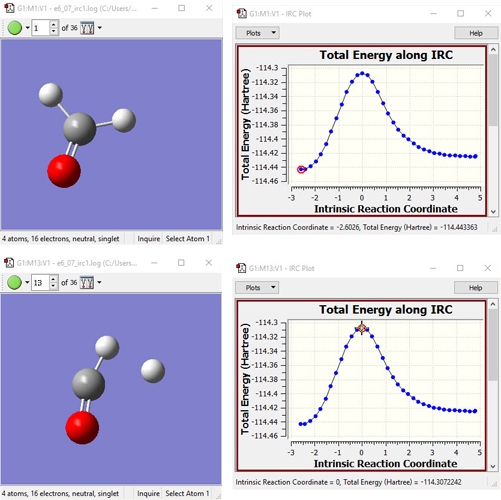
- Panning: Within a plot, the view can be moved along the X-axis or Y-axis by holding down the Shift key while dragging. This can be useful when used in conjunction with zooming, allowing you to follow the plot’s path.
Zooming In on a Plot
- Hiding individual plots/spectra: The upper section of the Plots menu, illustrated in the figure below, contains a list of all currently available items. You can hide or reveal individual items within the list by removing/restoring the checkmark before the item name (respectively). The Show All Plots item will always reveal (check) all items. The Hide Other Plots on the context menu (see below) will hide all but the currently displayed item. The Hide This Plot item on the menu will hide the currently displayed item.
The Plots Menu
This menu is found in all plot and spectra windows. This particular example comes from the plots window displayed for an IRC calculation. Currently, all available plots are visible.
This menu also offers options for Printing and Saving the plot, Saving a picture of the plot, and modifying the properties of the plot.
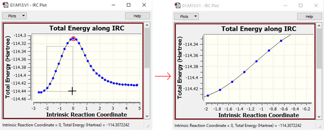
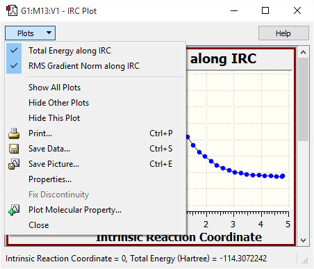
You can create additional plots of various properties for these job types. This is done by selecting the Plots=>Plot Molecular Property menu item in the plot window. This results in the dialog seen below.
Creating An Additional Plot
In this example, we are adding a plot displaying the C-C bond distance for atoms 1 and 2 over the course of the geometry optimization. The dialog at the left displays the various items that may be plotted.
The items available for plotting vary by the job type. Once generated, the new plot appears below the standard ones in the plots window.
Correcting Plot Discontinuities¶
When data is read in for a multi-geometry plot, the values along the X-axis should form a single continuous ascending set. In some occasions, a user may include molecules from two or more different files within the same molecule group. This is sometimes useful for comparison purposes or to extend the output from a previous run. When this occurs, the X-axis values will no longer form a single continuous ascending set, resulting in a jagged appearance in the resulting plot. When this situation is detected, an informational message is displayed.
The Plots=>Fix Discontinuity menu item may be used to correct such plots. When this feature is used, the words “(Modified)” are added to the title of the plot to remind the user that the data in the plot has been modified and so should be viewed with caution.
The Plot Context Menu¶
The menu on the left appears when you right click within a plot or spectrum.

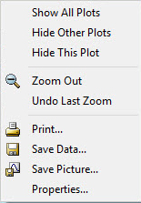
Right clicking in the plot or spectrum, including the gray section containing the title and axis labels, will bring up a context menu for that specific plot/spectrum. The options in the menu generally apply only to the current item. The context menu is illustrated above. The items have the following meanings:
-
Show All Plots and Hide Other Plots reveal all items and hide all but the current item, respectively.
-
Zoom Out restores the original plot appearance, undoing all zooming. Undo Last Zoom reverses only the most recent zoom operation.
-
Print prints the current plot or spectrum.
-
Save Data allows you to save the plot or spectrum data to a text file (see below).
-
Save Picture allows you to save the plot or spectrum as a graphics file.
-
Properties allows you to customize many aspects of the plot. It is discussed in detail here.
Saving Numerical Plot Data¶
The context menu for plots contains the Save Data item. Data from plots of geometry optimizations, IRC calculations, and the like can be saved in the same way. Here is some example data from an IRC calculation:
Total Energy along IRC # X-Axis: Intrinsic Reaction Coordinate # Y-Axis: Total Energy (Hartree) # X Y
-0.5999778220 -289.5812430000 -0.4999857200 -289.5768190000 -0.3999923250 -289.5728940000 ...
Plotting Additional Properties¶
You can create additional plots of various properties for these job types. This is done by selecting the Plots=>Choose Molecular Property menu item in the plot window. This results in the dialog below.
Creating An Additional Plot
In this example, we are adding a plot displaying the C-C bond distance for atoms 1 and 2 over the course of the geometry optimization. The dialog at the left displays the various items that may be plotted.
The items available for plotting vary by the job type. Once generated, the new plot appears below the standard ones in the plots window.
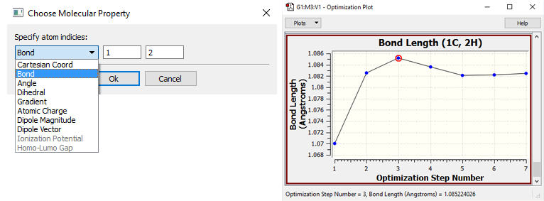
NMR Spectra¶
The Results=>NMR menu item displays the spectrum from an NMR calculation. An example spectrum is shown below.
NMR Spectrum Display
This is the default NMR display format. It displays all computed peaks. Clicking on a peak with the cursor displays the shielding value and degeneracy in the lower left corner of the window (e.g., peak 2-C above).
The fields at the bottom of the NMR Spectra window allow you to view the same data as relative values with respect to TMS or other standards. To use this feature, first select the desired element in the leftmost popup menu, and then select one of the available standard calculation results from the Reference field. Alternatively, you can enter a value directly into the Shielding field. The peaks will then reflect relative values with respect to the selected reference (which is included on the plot marked as "Ref"):
Displaying NMR Chemical Shifts
Clicking on a peak in this display mode shows the numeric chemical shift with respect to the specified standard in the lower left corner of the window. The corresponding shielding value is displayed in the Shielding field.
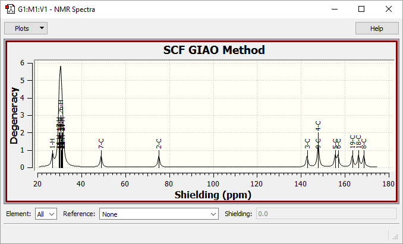
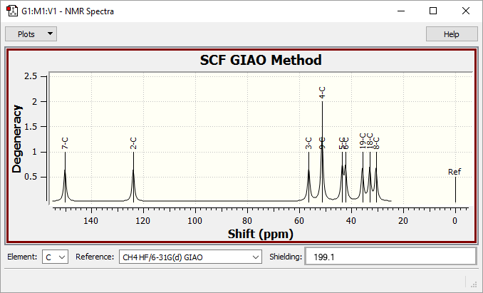
Modifying NMR Plot Properties
The properties of the NMR plot can be modified by using the Plots=>Properties menu path. GaussView offers the ability to modify the peak half-width at half height using the corresponding box on the dialog. The degeneracy tolerance can also be modified in this dialog. An example of modifying the peak half-width at half height is shown below.
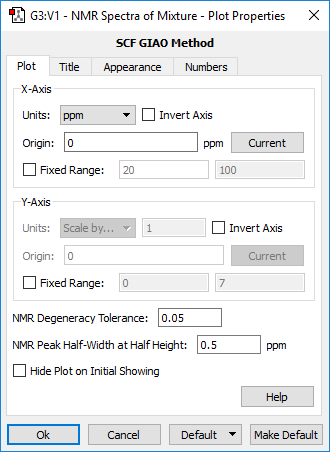
The NMR Spectra graph can also be customized using the Mixture Editor. More information on the Mixture Editor can be found here.
Adding New Reference Results¶
The data subdirectory of the main GaussView directory contains the nmr.data, which holds refernce data for NMR displays. This is an ordinary text file, and it can be modified with any text-editing software. However, you must take care to user maintain the existing format. It is prudent to make a backup copy of the file before adding to or modifying it.
The fields shown below, left to right, are: element symbol, predicted shielding value, and menu item label (typically the reference compound and model chemistry). We have added the line in red for the APFD/6-311+G(2d,p) model chemistry.
Sym Shielding Description¶
C 199.9853 "TMS HF/6-31G(d) GIAO" C 182.4656 "TMS B3LYP/6-311+G(2d,p) GIAO" C 187.435 "TMS APFD/6-311+(2d,p) GIAO" C 199.1 "CH4 HF/6-31G(d) GIAO" H 32.5976 "TMS HF/6-31G(d) GIAO" H 31.8821 "TMS B3LYP/6-311+G(2d,p) GIAO" Si 449.7802 "TMS HF/6-31G(d) GIAO" Si 327.3890 "TMS B3LYP/6-311+G(2d,p) GIAO" N 260.8 "NH3 HF/6-31G(d) GIAO" N 258.4 "NH3 B3LYP/6-311+G(2d,p) GIAO" O 323.1 "H2O HF/6-31G(d) GIAO" O 320.0 "H2O B3LYP/6-311+G(2d,p) GIAO"
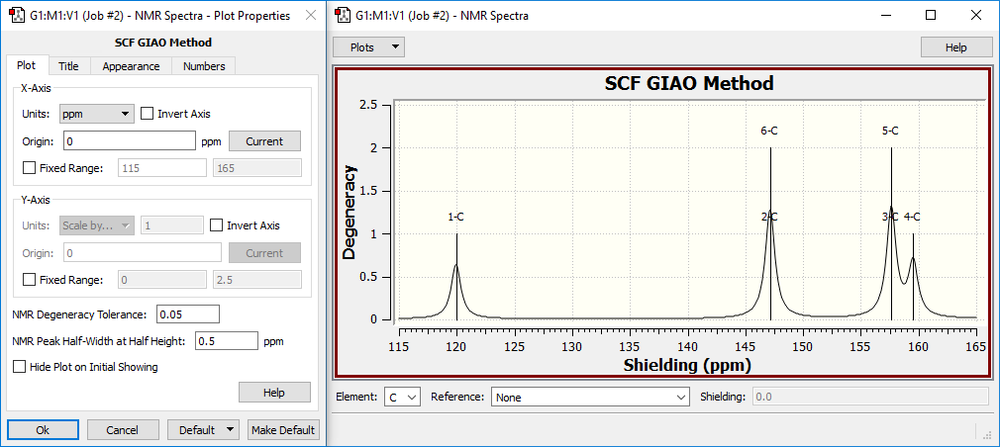
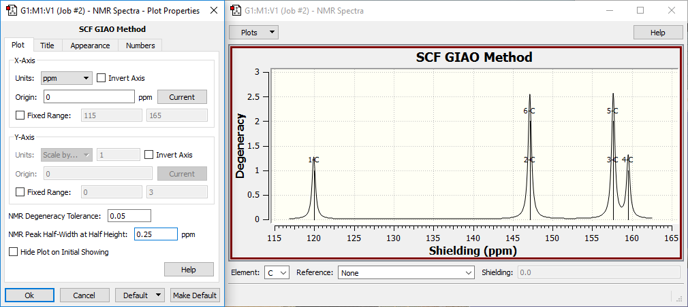
B 106.7 "B2H6 HF/6-31G(d) GIAO" B 83.6 "B2H6 B3LYP/6-311+G(2d,p) GIAO"
Quotation marks are required if the description includes spaces. A pound sign (#) in the first column indicates a comment.
Displaying Vibrational Frequency Results¶
This dialog displays a table of all computed spectra from frequency calculations. These can include vibrational frequencies, infrared intensities, Raman intensities and/or VCD rotational strengths (depending on the specific calculation performed). The window’s Spectra button is used to access graphical representations of the predicted spectra.
The Display Vibrations Window
The items in the top row of the dialog allow you to select which isotopologue’s data is displayed (the Active Data popup menu). The New Data button opens the Run FreqChk dialog, and the Edit Isotopologues button opens the Atom List Editor. Note that these items are not visible when you have opened the frequency data from a .LOG file.
The highlighted row in the list area indicates which vibration is currently selected for dynamic display. You can start this display by selecting the Start Animation button and halt it by clicking on it again, now labeled Stop Animation. During animation, a cyclical display shows the nuclear motions corresponding to the vibration selected. You can select a different mode by clicking on the desired mode in the scrolling list. You can select a new mode without halting the previous one. You can also rotate and move the vibrating molecule, using the normal mouse buttons.
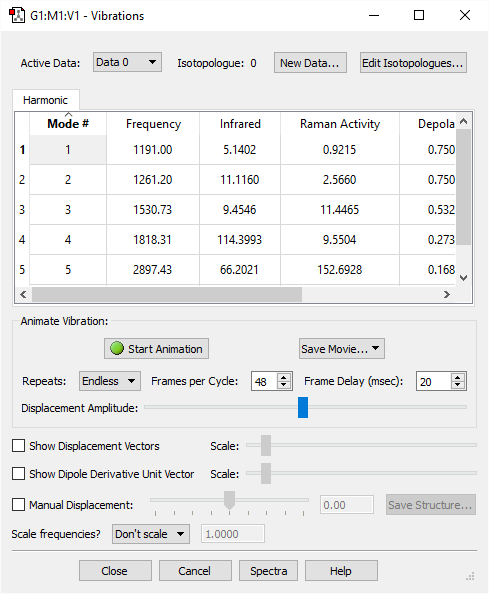
The two slide bars below the Start/Stop Animation button adjust the speed and magnitude of the motion. Default values for these settings may be specified in the Vibrations Preferences panel (as well as for the displacement and dipole derivative unit vector discussed below).
The animation can also be saved as a movie and/or as individual frames using the Save Movie button. The controls in the line below this button specify characteristics of the resulting movie.
The Repeats: menu offers several different options for the animation of the molecule. The numbers represent how many cycles will be displayed when you press the Start Animation button. Selecting Endless means the animation will not end until you press the Stop Animation button. The Frames per Cycle: menu allows you to specify how many frames should be present in each cycle. You can specify any number of frames between 4 and 120. The more frames that it takes to complete a cycle makes the resulting animation smoother. The Frame Delay (msec): menu allows you to modify the length of time between each frame. Increasing this number allows for a slower animation.
The Displacement Amplitude: slider allows you to specify the magnitude of the displacement of the atoms when animating a vibrational mode. This will determine how extreme the vibrations will appear in the animation. Increasing the displacement by dragging the slider to the right will make the vibrations more pronounced, while decreasing it--dragging the slider towards the left--will make them more subtle.
The Scale frequencies? area can be used to scale frequency values by a uniform amount. When the popup menu is set to Specify, you can enter the scaling factor into the field at the right.
The two vector-related checkboxes in the lower section of the dialog have the following meanings (see figure below for examples):
-
Show Displacement Vectors: Display the motion associated with the vibration as vectors on each atom.
-
Show Dipole Derivative Unit Vector: Display the dipole derivative unit as a vector.
Displaying the Displacement Vector and Dipole Derivative Unit Vector By default, the displacement vectors are blue, and the dipole derivative vector is orange.
The various displacement vectors are displayed in blue, and the dipole derivative unit vector is the orange arrow on the left.
You can specify defaults for this dialog using the Vibrations Preference. You can change the colors of the vectors using the Vibration Colors panel of the Colors Preference.
Using Manual Displacement Display Mode¶
The Manual Displacement box allows you to set a displacement from the equilibrium geometry. When it is checked, animation of the vibration will be turned off. When checked, the slider, number box, and Save Structure button become active. In this mode, changing the slider or the corresponding number box will cause the molecule to be statically displaced along the currently active normal mode. The center value of the slider, or zero in the text box, corresponds to no displacement. Moving the slider to the right or entering a positive value in the text box will displace the atoms along the currently active normal mode. Moving to the left or entering a negative value will displace the atoms in the direction opposite of the currently active normal mode. The range of values allowed in the text box ranges from -1 to +1. Clicking on Save Structure will cause a new molecule window to appear with a geometry exactly corresponding to the displaced structure.
The primary use of this tool is to help eliminate spurious negative eigenvalues. When one is searching for a transition state, it is not uncommon to end up with a structure containing two (or more) negative eigenvalues instead. These spurious negative eigenvalues are generally small but must be eliminated to isolate the true transition state. For these cases, select the normal mode corresponding to the spurious negative eigenvalue, and then select Manual Displacement. Adjust the slider to the right (or enter a positive number in the text box), and then select Save Structure to create a new molecule with the displaced geometry, which you can then reoptimize. If a positive displacement fails to eliminate the spurious negative eigenvalue, follow the same procedure with a displacement in the negative direction. You can also try varying the magnitude of the displacement.
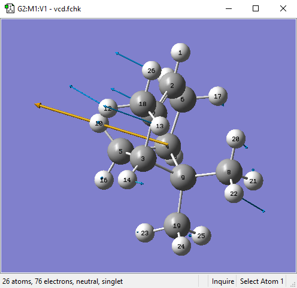
A second purpose of manual displacement is to generate pictures of a molecule in the midst of a vibration. Thus, it can be used to effectively freeze the animation of the vibration at a specific point.
Comparing Spectra for Isotopologues¶
GaussView makes it easy to compare spectra for different isotopologues of the same structure. To do so, you first define the desired isotopes for each isotopologue using the Atom List Editor. Then you generate vibrational data sets for each one (see below). Once completed, you can use the Display Vibrations dialog to examine the spectra and normal modes.
Comparing Normal Modes for Three Isotopologues
In the Atom List Editor (top), we have defined three isotopologues for this simple molecule: one with the standard isotopes, one with deuterium replacing each hydrogen, and a third with tritium replacing a single hydrogen. The normal mode corresponding to the sixth frequency shifts location for each isotopologue (compare the values beneath each View window). The motion for the first two isotopologues is similar, but the mode for the tritium form has the motion confined to that atom.
The buttons in the upper right can be used to define isotopologues and generate frequency data for them.
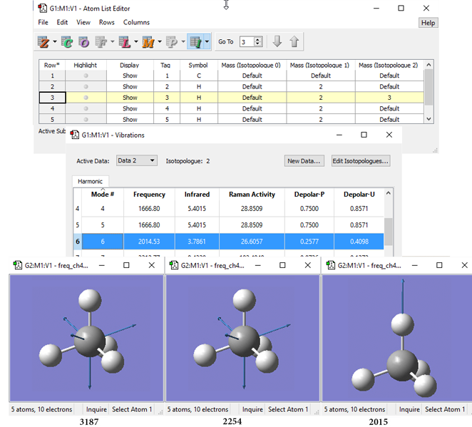
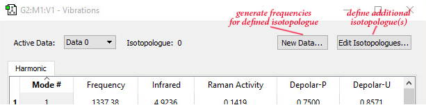
Defining Additional Isotopologues¶
Go to the Atom List Editor, and click the arrow on the “I”? icon. Add the next isotopologue to the column.
Adjust the isotope values as appropriate.
Generating and Displaying Frequency Data for an Isotopologue¶
Click New Data in the Vibrations window. The window shown below appears, allowing you to choose the desired isotopologue:
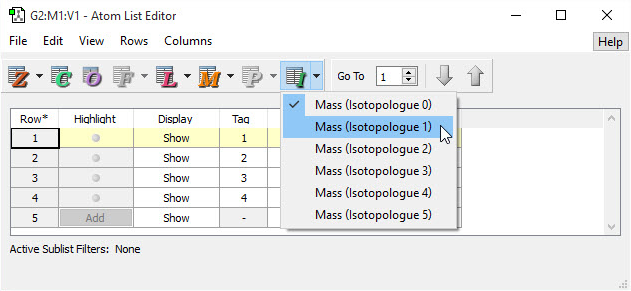
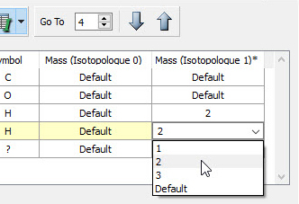
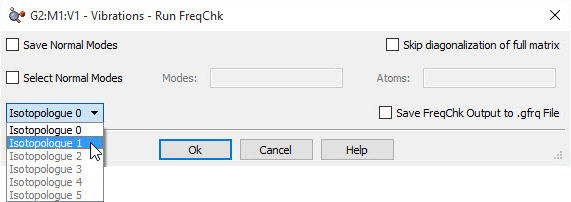
Back in the Vibrations windows, use the Active Data popup to pick a data set (isotopologue) to display:
The currently displayed set is indicated by a label to the right of the popup. The spectrum, normal mode animation and other displays will reflect the selected isotope set.
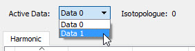
Frequency-Dependent Calculation Results¶
Gaussian frequency calculations can specify values for the electromagnetic field perturbation at which to compute vibrational properties. GaussView allows you to specify the desired incident light frequency for such frequency-dependent calculations by adding a popup menu to the top of the Vibrations window, as illustrated below:
Selecting the Incident Light Frequency
GaussView adds this menu at the top of the Vibrations window for frequency-dependent calculation results. The Static Limit selection corresponds to a standard frequency calculation.
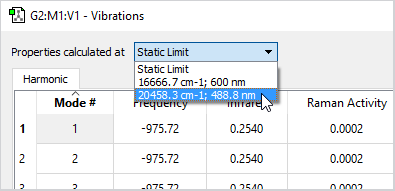
Anharmonic Frequency Analysis Results¶
The results from Gaussian anharmonic frequency calculations can be reported by GaussView via the Results=>Vibrations menu path. The following figure illustrates the form of this dialog when anharmonic frequency results are available:
Anharmonic Frequency Results The usual frequency table now has three tabs. The selected frequencies in the Harmonic and Anharmonic tabs are coordinated, and the anharmonic modes involving the selected mode are listed in the Anharmonic, mode tab (mode 6 in this example).
The following tabs are available in the frequency data table:
-
Harmonic: reports the harmonic frequency data.
-
Anharmonic, mode N: the table of anharmonic data for the Nth normal mode, where N is the currently selected mode in the harmonic table.
-
Anharmonic: gives the table of anharmonic data for all normal modes.
The spectra window contains a two controls at the top. The Show Harmonic and Show Anharmonic check boxes toggle the visibility of the corresponding spectra data. The anharmonic spectrum is displayed in red.
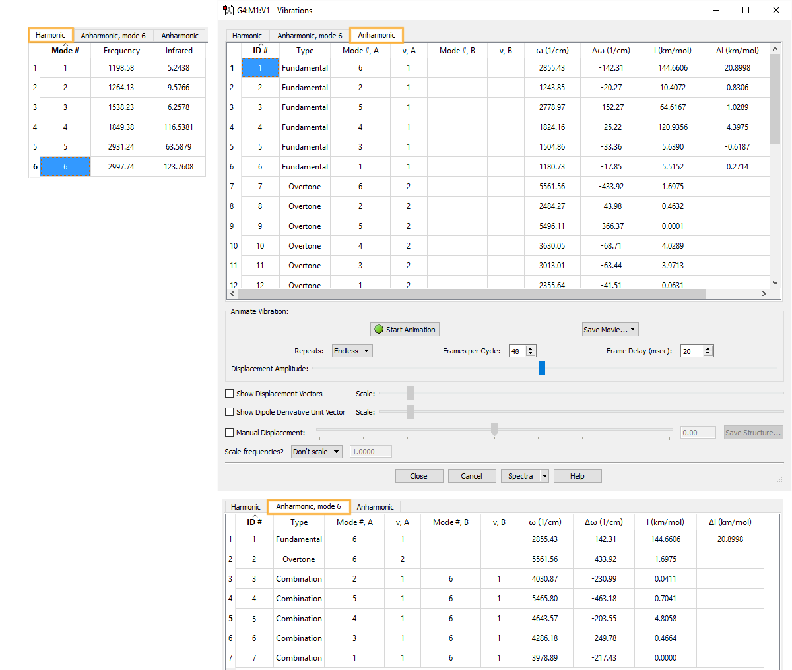
Viewing Both Harmonic and Anharmonic Spectra
You can control the appearance of the plot using the Mixture Editor (Plots=>Mixture Editor menu path).
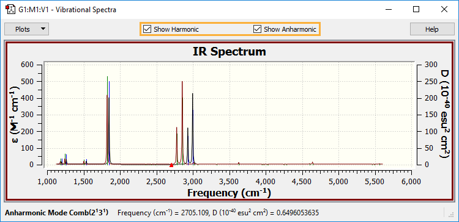
Display Vibrations — Run FreqChk¶
The Results=>Vibrations menu item is used to access various spectral results from frequency calculations. It allows calculated vibrational data to be displayed as dynamic screen motions, based on information from a frequency calculation. When you have retrieved results from a Gaussian checkpoint file or formatted checkpoint file, this menu item may initially display the Display Vibrations - Run FreqChk dialog, illustrated in the figure below. Note that if you have opened a Gaussian log file, you are taken directly to the Display Vibrations dialog.
Running FreqChk to Perform Vibrational Analysis In some cases, this dialog precedes the Display Vibrations dialog.
This dialog is used to run the freqchk utility included with Gaussian. This utility performs vibrational analysis for the isotopologue specified in the popup menu in the left portion of the dialog (the menu is marked with a star); here, the analysis will be performed for the second isotopologue. Once complete, the modes and spectra are available for visualization via the Display Vibrations dialog.
The Save Normal Modes and Select Normal Modes items are relevant only with Gaussian 09 and later. They correspond to the Freq=SaveNormalModes and Freq=SelectNormalModes options, respectively (and to the equivalent FreqChk options). The former saves computed normal modes back to the checkpoint file, and the latter limits the vibrational analysis to the listed modes (Modes) and modes involving the listed atoms/atom types (Atoms). Use the corresponding fields to specify the mode or atoms of interest.
The Skip diagonalization of full matrix corresponds to Freq=NoDiagFull.
Once you exit the Run FreqChk dialog, the utility will run, and the Display Vibrations window will open.
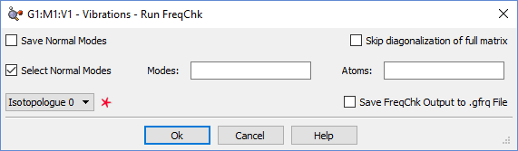
Vibronics Spectra¶
The Results=>Vibronics menu item displays vibronic analysis results: Vibronic OPA Spectrum and the Duschinsky Matrix.
Vibronic Spectrum
The molecule's Duschinsky Matrix is shown below. It shows the overlap between each pair of initial and final states as a shade on a tone scale from no overlap (white) to complete overlap (solid color).
Duschinsky Matrix Display
The Plots dropdown allows you to select the Reported Transitions Table option, which will display the reported transitions of the current molecule.
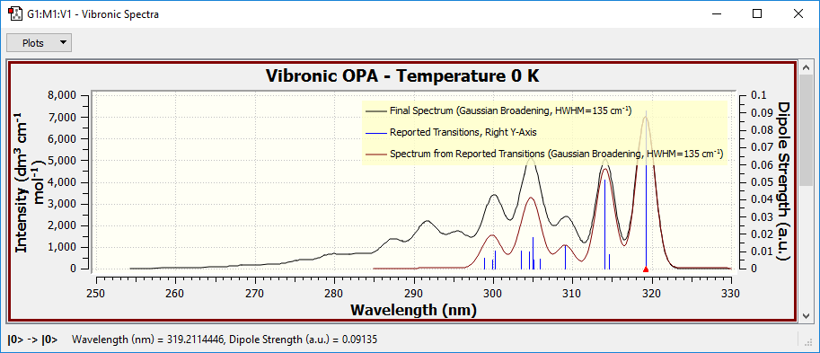
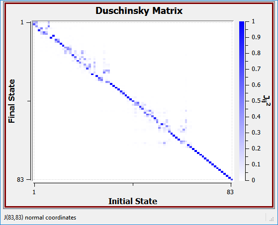
Vibronic Transitions Table
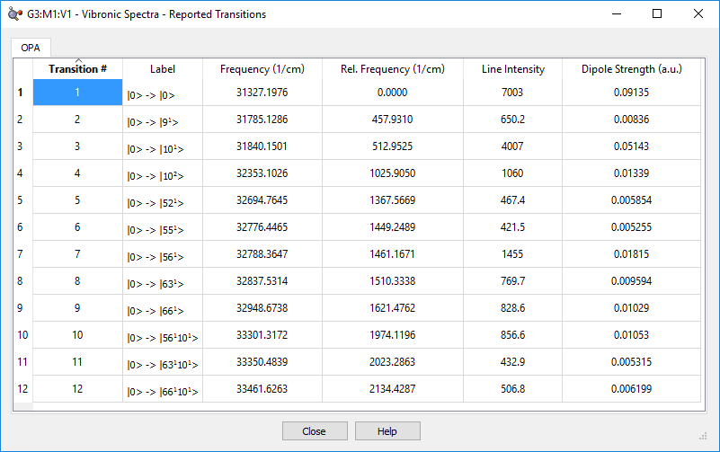
Examining Multiple Vibrational Spectra: The Mixture Editor¶
Example Spectra Plot for Multiple Data Sets
The Mixture Editor
The Mixture Editor dialog is used to modify plots when more than one data set is plotted. The dialog contains two sections:
-
The spreadsheet-like list contains controls for each available data set. The list may be sorted by clicking on any column header. You can select multiple data sets using the control command and shift keys. Any changes made will apply to all selected items.
-
The Combination region below the list contains the options for modifying the plot line corresponding to the combined and (possibly) weighted data.
The leftmost columns in the file list are as follows:
-
Active: Whether the data set is included in the plot. Inactive data does not contribute Boltzmann Populations calculations. For the combination plot, the Active box controls whether this data is considered when GaussView determines plot scaling. The presence of the Combination data is controlled by its Plot Style (None hides it).
-
ID: This displays the identification number given to the file. Numbering starts at 0. This column may be used to restore the original ordering.
-
Molecule: This displays the name of the output file.
-
Data Name: Contains a string describing the data set (used for plot legends). This may be edited.
-
Free Energy: This displays the free energy of the molecule. The units for this field are hartrees. When free energies are not available, the label changes to Energy and the field displays the total energy.
-
Boltz. ID: Identification number for the set's Boltzmann group (see below). IDs start at 0.
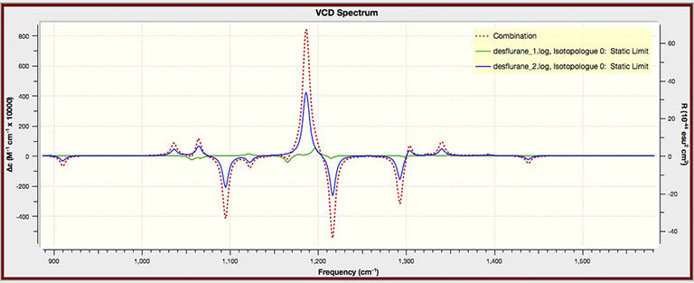
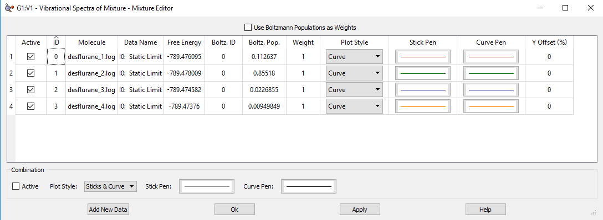
-
Boltz. Pop.: This displays the conformer’s contribution to the Boltzmann population.
-
Weight: This displays the weight given to each molecule’s data in the plot. By default, GaussView will weight all data sets at 1. These values can be edited.
-
Plot Style and Pen Fields: See below.
-
Y Offset (%): This option allows you to shift the Y-axis for the data by the amount you specify, expressed as a percentage.
Checking the Use Boltzmann Populations as Weights box will set Boltzmann weighting for all items and remove Weight column from table. Right-clicking within the file list brings up a menu with the following options which also modify the values in the Weight column:
-
Assign Boltzmann Populations to Weights: Copy the Boltzmann populations into the Weight column (where they may be edited).
-
Assign 1.0 Weights: Assigns each data set a weight of 1.0 (restoring it to the GaussView default).
-
Assign Equal, Normalized Weights: Assigns each data set an equal weight that is normalized over all Active data sets.
Boltzmann Populations are computed from all Active data sets having the Boltzmann ID, including ones with Plot Style set to None. Vibration data of isomes (including nuclear mass) that match the same incident frequency from a Boltzmann group. Harmonic and anharmonic data are in different groups. This field is editable to allow you to redefine Boltzmann groups.
The data list below shows 2 Boltzmann groups:
Boltzmann Groups: Static Limit (0) and 18797nm(1)
The following controls are located in both the Combination area and in each data set row:
-
The Plot Style menu determines how the corresponding line is displayed. For the combination plot, the default style is None (it is not visible); the default for the individual data sets is Sticks and Curve which displays as both Stick (plotted as pillars) and Curve (a sloped line connecting each of the plot points).
-
The Stick Pen option allows you to customize the display when the Stick or Sticks and Curve options are selected. It has options to change the color, width, and line style (see below).
-
The Curve Pen option allows you to customize the line displayed when the Curve or Sticks and Curve option are selected. It has options to change the color, width, and line style (see below).
On the bottom of this dialog, the Add New Data button allows you to add more data to the current plot, and it opens the OS default file opening system. The OK button will close the Mixture Editor dialog, and the Apply button will apply all changes you have made to the plot without closing the dialog.
Customizing Line Styles¶
The following dialog will appear when you click on any of the Curve Pen or Stick Pen menus:
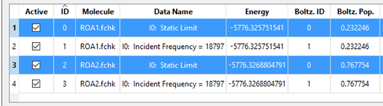
The Choose Pen Dialog
The fields allow you to specify the color, thickness and style of the sticks and/or line. The Color field will use the standard OS color selection facility, the Width field allows you to specify the line thickness in 0.1 pixel increments, and the Style field specifies the kind of line using the popup menu illustrated above. The specified style is previewed in the field at the top of the dialog.
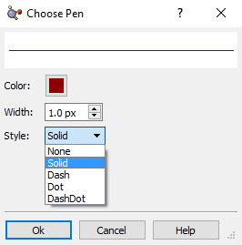
Displaying UV-Visible Spectra¶
The Results=>UV-VIS menu item displays the spectra computed by an excited states calculation. An example spectrum is displayed below.
Example UV-Visible Spectrum Display
Additional spectra may be present for some calculations, including ECD for chiral molecules.
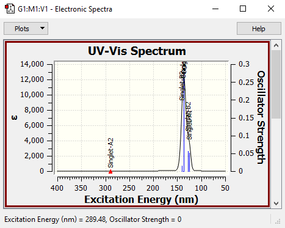
ORD Plot¶
For ORD calculations, GaussView plots the predicted optical rotatory dispersion for each specified wavelength.
ORD Results Plot
More information about this functionality is in Working with Plots here.
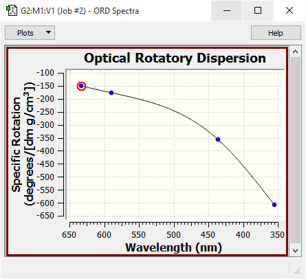
Manipulating and Customizing Spectra¶
All spectra can be manipulated for viewing in a variety of ways:
-
Scrolling and resizing: Typically multiple plots/spectra are available in the same dialog and will not all be viewable at the same time. In that case, the dialog window can be resized to see more of them at the same time, or the user can use the scroll bar to scroll down to see the desired spectra. If several spectra are visible, then resizing the window expands/shrinks the X-axis while the plot height stays constant. In other words, only the height of the viewing area changes. When only one spectrum is visible—i.e., the dialog only contains one spectrum or the other plots have been hidden (see below)—then resizing the dialog expands/shrinks the spectrum along both axes. To focus on one or two spectra, hide the other spectra using the Plots menu.
-
Hiding individual spectra: The upper section of the Plots menu, illustrated below, contains a list of all currently available items. You can hide or reveal individual items within the list by removing/restoring the checkmark before the item name (respectively). The Show All Plots item will always reveal (check) all items. The Hide Other Plots on the context menu (see below) will hide all but the currently displayed item.
-
Panning: Within a spectrum, the view can be moved along the X-axis or Y-axis by holding down the Shift key while dragging. This can be useful when used in conjunction with zooming, allowing you to follow the spectra’s path.
The Plots Menu for Spectra Displays
This menu is found in all plot and spectra windows. This particular example comes from the plots window displayed for an IRC calculation. Currently, all available spectra are visible.
- Zooming and unzooming: All of the spectra support zooming. This feature is very handy for resolving fine details. To zoom in, click and hold the left mouse button to select one corner of the zoom field. While holding the mouse button down, move the mouse to opposite corner of the desired zoom area. The zoom area will be marked with a green rectangle (see Figure 109). Release the mouse button, and the selected area will be zoomed to fill the full area. You can keep zooming in as much as you want. To unzoom (i.e., restore the original view), use the plot context menu’s Zoom Out item.
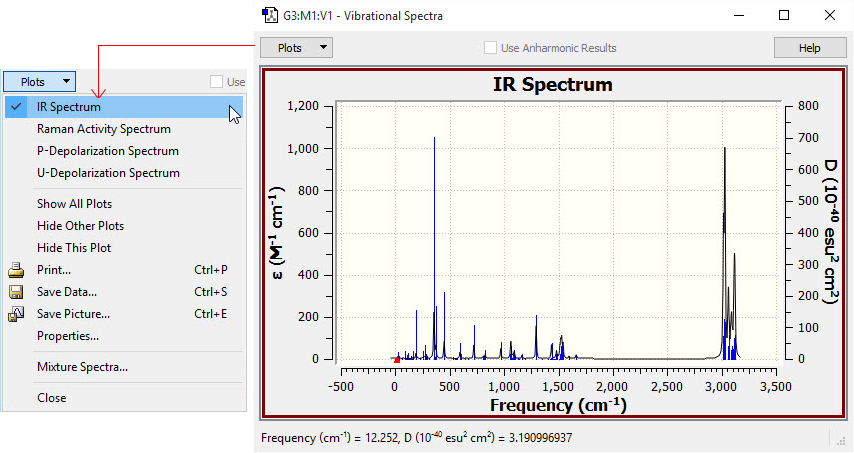
Zooming In on a Spectrum
The spectrum on the left is the one initially displayed by GaussView. Here, we are zooming in on the indicated rectangular area. The resulting view is displayed on the right.
The Spectra Context Menu¶
The menu on the right appears when you right click within a spectrum.
The options in the context menu generally apply only to the current spectrum. They have the following meanings:
-
Show All Plots and Hide Other Plots reveal all items and hide all but the current item, respectively.
-
Zoom Out restores the original spectrum appearance, undoing all zooming. Undo Last Zoom reverses only the most recent zoom operation.
-
Print prints the current plot or spectrum.
-
Save Data allows you to save the plot or spectrum data to a text file (see below).
-
Save Picture allows you to save the plot or spectrum as a graphics file.
-
Properties allows you to customize many aspects of the spectrum. It is discussed in detail here.
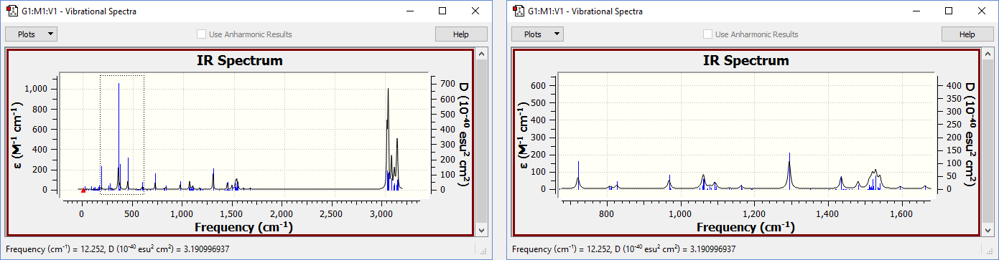
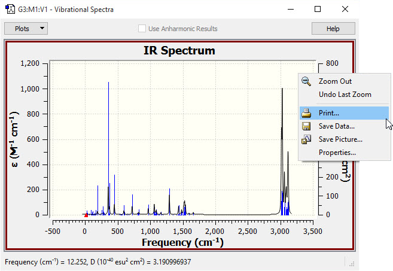
Saving Spectra Data¶
The context menu for spectra contains the Save Data item. This may be used to save the numeric data corresponding to a plot/spectrum to an external file. Here is an example of the data saved from an IR spectrum:
IR Spectrum # X-Axis: Frequency (cm-1) # Y-Axis: <html>ε</html> (M-1 cm-1)
Peak information # X Y # 92.0270000000 295.0377577730 # 211.5876000000 210.4813272886 …
Spectra # X Y DY/DX
0.0000000000 0.0443536939 0.0009621102 8.7500000000 0.0541413503 0.0012972784 17.5000000000 0.0675621566 0.0018078842 …
You can specify the range of data and step size between points for this kind of data via the additional fields that GaussView adds to the standard Save dialog (illustrated to the right of the data above).
For NMR spectra, an additional summary file may also be written, using the NMR Summary item on the spectrum’s context menu. Here is an example:
Summary of NMR spectra ( SCF GIAO Magnetic shielding) # Degenerate peaks are condensed together (Degeneracy Tolerance 0.05) # # Shielding (ppm) Degeneracy Elem Atoms
26.6182000000 1.0000 H 1 27.7949000000 2.0000 H 5,6 76.9883000000 1.0000 C 2 93.9401000000 1.0000 C 3 106.1777000000 1.0000 C 4
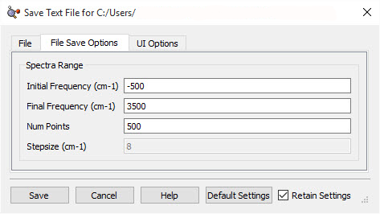